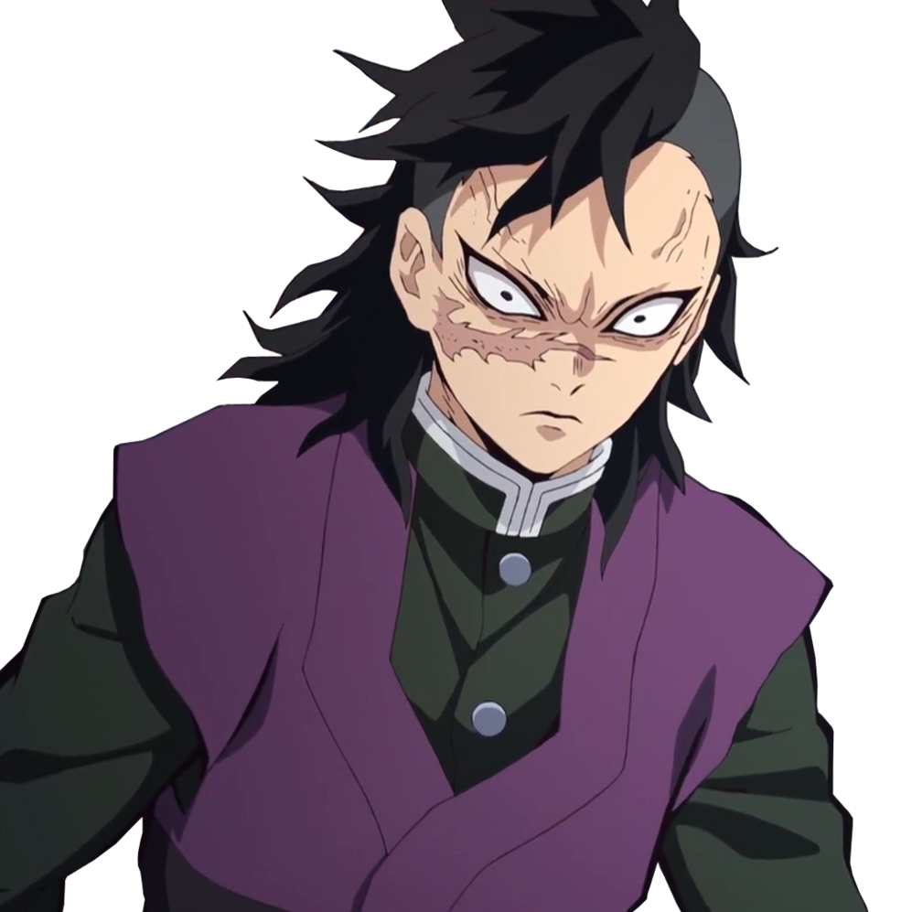

不死川玄彌（しなずがわ げんや Shinazugawa Genya）
- 配音 : 岡本信彥（日本）；蔣鐵城（台灣）；劉明月（中國大陸）；陳成港（Viu）、（TVB）（香港）；Zeno Robinson（美國）
-
與炭治郎同期的鬼殺隊劍士，岩柱．悲鳴嶼行冥的徒弟，同時也是風柱．不死川實彌的大弟。留著深色雞冠頭，左臉有一道延伸至鼻頭的傷疤，是過去被鬼化的母親攻擊所留下的。和實彌一樣性格粗暴，後來與炭治郎共同戰鬥過後態度有所改善。
武器為一把日輪刀，還配有一把雙管獵槍（削短版）。體能方面差勁，無法使用呼吸，但其強大的咬合力和特殊的消化器官，讓他擁有將鬼吃掉後讓自身體質短暫變成鬼的特異「味覺」，被黑死牟稱作仿鬼的食鬼，吃的鬼越強再生能力與力量就提升得越多，是為更接近柱而使用的苦肉計，在鬼殺隊中為難得一見的奇才，缺點是會被禰豆子的血鬼術給波及。因為無法使用呼吸法而未被悲鳴嶼收為繼子，但仍受到對方的教導與訓練。
原生在一個九口大家庭，在某個夜晚，弟妹接連遭遇鬼化的母親襲擊，後誤解實彌殺害母親導致實彌出走甚至加入鬼殺隊，事後為此後悔，為了向實彌道歉而進入鬼殺隊，實彌得知後相當生氣，因此在兩人見面時都故意擺出冷漠的態度，甚至以粗暴的方式意圖將他趕出鬼殺隊，表面看似不通人情，實際上都是為了保護這個唯一倖存的弟弟，讓他過普通人的生活到終老都不受鬼的侵害。
最終選拔通過後，因為不滿主考官不馬上給予他日輪刀而對其動粗，被炭治郎阻止。之後炭治郎在蝶屋敷療傷時兩人再次碰面，已經長得相當高大壯碩。
在煉刀師之村篇再次登場，似乎不願意與炭治郎交流，炭治郎以為他是因肚子餓而生氣。在上弦之肆．半天狗與上弦之伍．玉壺襲擊村子時，以雙管獵槍（削短版）將半天狗的分身積怒和可樂爆頭，卻使半天狗再度分裂出空喜和哀絕。起初對於炭治郎擊敗上弦之陸一事相當不服，以鬼化姿態威嚇炭治郎不准搶他的風頭，炭治郎非但沒有生氣，更直接將砍殺半天狗的任務交給他。在將刀刃砍向半天狗的真身時，發現對方的脖子太硬導致日輪刀無法切下，眼看要被積怒從背後刺穿時，炭治郎出現砍斷積怒的脖子，並鼓勵他繼續追擊，不要放棄這得來不易的機會，讓他相當羞愧，並放下自尊與炭治郎等人一同對付半天狗。一行人戰勝後，看見炭治郎與禰豆子兩人的兄妹情誼時，對炭治郎有所改觀，進而與之成為勁敵與摯友。
與柱及其他隊員一同受困無限城時，和時透、悲鳴嶼、實彌與上弦之壹．黑死牟交戰，其雙手和身軀被斬斷，透過時透的幫助成功接回。因為食用了黑死牟的頭髮以及斷刀的原故，外貌變得與鬼極其相近、持有的手槍也浮現與其刀刃上的眼珠相同的圖案，更覺醒了能夠控制樹木的血鬼術。因黑死牟的第二形態使身體被砍成兩半，最後因黑死牟已死使其再生能力消失，而在實彌懷中消散而逝。
在鬼滅學園就讀高中一年酸橙班，隸屬於射擊部。
在第一回人氣投票結果中，以6票獲得第54名。在第二回人氣投票結果中，以2589票獲得第15名。